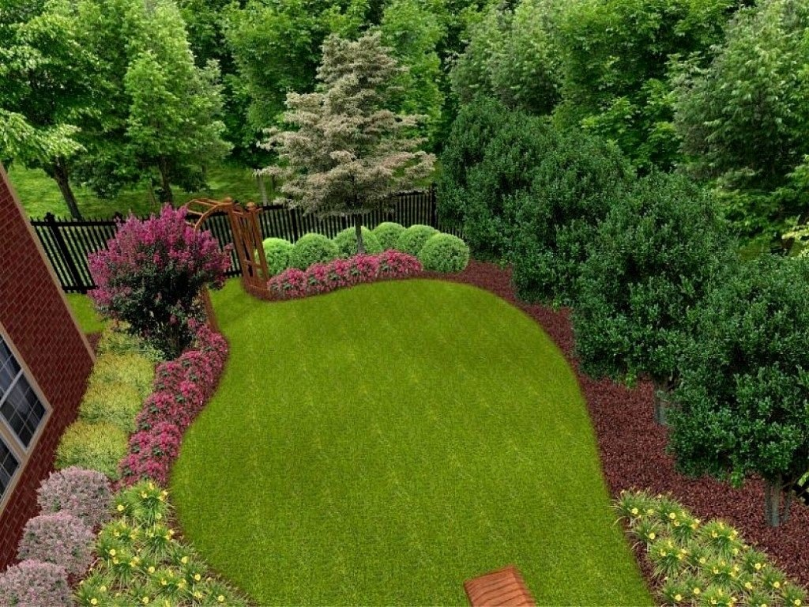

Visit Our Nursery For Best Plants
Our Main services

Design&Planting
A garden is a planned space, usually outdoors, set aside for the cultivation, display, and enjoyment of plants and other forms of nature. The single feature identifying even the wildest wild garden is control. The garden can incorporate both natural and artificial materials.Garden design is the process of creating plans for the layout and planting of gardens and landscapes. Gardens may be designed by garden owners themselves, or by professionals. Professional garden designers tend to be trained in principles of design and horticulture, and have a knowledge and experience of using plants.

Transport
We provide weekly delivery services to the South West, Albany, Kalgoorlie, Geraldton and Inland regions of WA. We can also arrange special deliveries and freight forwarding, to other areas, as required. Our nursery body trucks are fitted with a cool mist system to keep deliveries fresh and in perfect condition. Stock is transported on nursery trolleys making drop off and pick ups more streamline for our customers. Our friendly drivers are also experienced in handling plant material. Consideration is also given to the maintenance needs of the garden. Including the time or funds available for regular maintenance, spreading or self-seeding of the plants (annual or perennial), bloom-time, and many other characteristics.